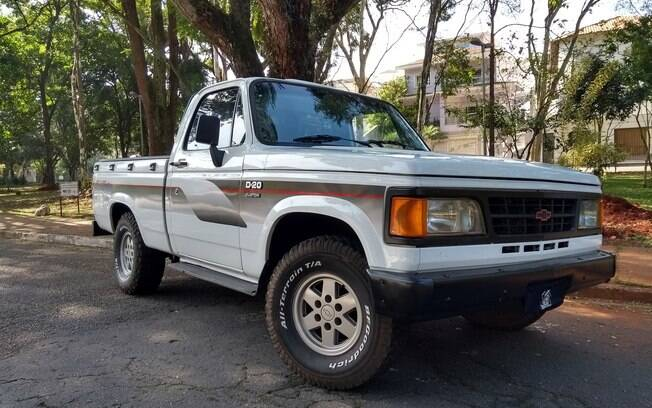

As picapes foram historicamente desenvolvidas para o trabalho. No campo ou na cidade elas eram rústicas, se comparadas aos veículos de passeio, e com quase nada de mimos para o motorista. Mas essa história começou a mudar com modelos como a Chevrolet D20, feita para crescimento de um público potencial que buscava algo que fosse além das tarefas da semana.
Nos Estados Unidos as décadas de 60 e 70 mudaram o panorama desse tipo de veículo. Eles passaram a receber mais itens de conforto, estilo e também diferenciais mecânicos, como motores grandes e algo que atraísse mais o consumidor. No Brasil, a Chevrolet D20 foi um marco.
No mercado brasileiro, o segmento de picapes cresceu bastante ao longo dos anos. Mas foi a partir da década de 80 que elas passaram a oferecer acessórios e equipamentos que podiam despertar o interesse de um outro público com grande potencial financeiro.
A linha 20 da Chevrolet fez sua estreia em meados da década trazendo um estilo contemporâneo e também, como já citado, itens de conforto e acabamento mais refinado em algumas versões. O consumidor podia escolher entre a C20 (gasolina), A20 (álcool) ou a D20 (diesel), que se tornaria a versão mais famosa.
Com o passar dos anos algumas melhorias foram feitas em relação ao conforto. Uma versão 4x4 sempre foi um pedido dos proprietários, mas a que foi desenvolvida pela fábrica apresentou problemas sérios no diferencial, algo resolvido pela Engesa em uma adaptação bem feita.
Rara Chevrolet D20

O exemplar da matéria tem uma história bastante rica de trabalho. O odômetro marca quase 900 mil quilômetros rodados, com atividade no campo e estrada. Além disso ela passou por uma preparação leve, algo que aumentou consideravelmente a diversão ao volante.
Basta uma cutucada no acelerador da Chevrolet D20 para que o torque todo apareça com abundância. Aliás, vale ressaltar que a segunda marcha é suficiente para a saída de semáforo. Depois disso a força parece não ter fim e o som da turbina é ouvido em todas as rotações. Não se esqueçam de levantar o som, pois vale a pena.